GlaideGrader: AI-Powered Grading Platform
Redesigning Evaluation at Scale for Great Learning — from a tool evaluators tolerated to one they rely on every day.
Project Overview
- Role — Lead Product Designer (IC)
- Company — Great Learning
- Timeline — 4 months (Q4 2025 – Q1 2026)
- Team — 1 Designer, 4 Engineers, 1 PM
- Tools — Figma, React prototyping, User interviews
The Problem
Evaluators wasted 70% of their time on navigation, loading, and manual workarounds instead of actual grading — leading to delayed feedback and burnout.
The Solution
Redesigned grading experience with AI quality checks, mobile support, and an analytics dashboard — built around how evaluators actually work.
Impact at a Glance
45% faster
Grading time: 2 hours → 1 hour for 100–120 submissions
95% satisfaction
Evaluator satisfaction up from 62% (+33 percentage points)
9/10 NPS
Evaluator NPS up from 6/10
60% fewer errors
Grading inconsistencies caught by AI QC
25% mobile
Of all grading now happens on mobile in first month
₹15L saved
Annual savings from efficiency gains across 200+ evaluators
The Challenge
Great Learning's evaluators were struggling with Canvas LMS SpeedGrader — a tool designed for traditional classrooms, not high-volume EdTech grading. The friction was everywhere.
The Problem in Numbers
- 68% experienced slow submission loads (3–8 seconds)
- 54% lost data from no autosave
- 71% struggled with inefficient navigation
- 43% used manual workarounds (Excel, screenshots)
- 82% wanted AI assistance
Business Impact
- 7–10 day feedback cycles (target: 3–5 days)
- High evaluator churn from burnout
- Inconsistent grading quality across cohorts
- Lost productivity — no mobile grading option
Research & Discovery
We ran four research methods to deeply understand evaluator workflows before designing a single pixel.
Method 1: Evaluator Survey (50+ responses)
Structured survey revealed grading bottlenecks and workflow inefficiencies across the evaluator pool.
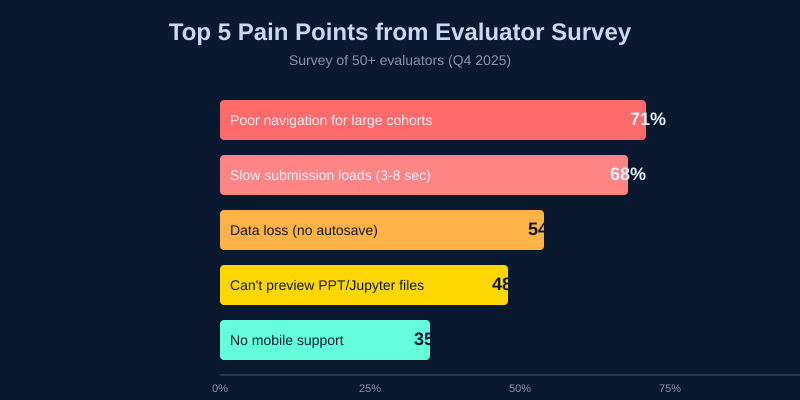
Top Pain Points
- 71% — Difficult navigation for large cohorts (500+ students)
- 68% — Slow submission loads (3–8 seconds)
- 54% — Data loss from no autosave
- 48% — Can't preview PowerPoint / Jupyter files
- 35% — No mobile support
Method 2: Shadowing Sessions (5 evaluators)
Observed actual grading workflows and timed each activity to quantify where time was being lost.
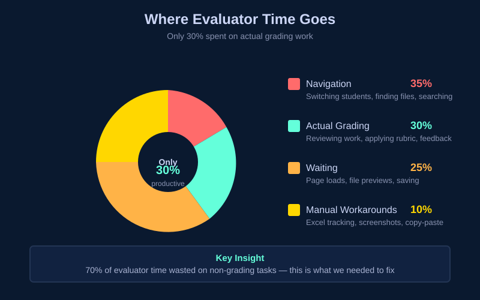
Method 3: Deep-Dive Interviews (15 evaluators)
Qualitative interviews revealed the hidden mental models and workarounds evaluators had built around the broken tool.
Insight 1
"If I could see rubric, submission, and sample solution together, I'd grade 2× faster." — Side-by-side access was the single biggest opportunity.
Insight 2
"I type the same feedback 50 times a week." — Repetitive comments were a massive hidden time drain with no tooling support.
Insight 3
"I screenshot plagiarized work and manually cross-reference later." — Plagiarism tracking was entirely manual and error-prone.
Method 4: Stakeholder Workshops (3 sessions)
Collaborated with GuruOps, Program Managers, and Engineering to align on priorities and technical feasibility — ensuring design decisions were grounded in organizational constraints.
Design Process
Phase 1: Information Architecture
The core insight was that the old tool forced too many tasks into a single, cluttered view. We separated it into three focused views, each optimized for a distinct mental mode.
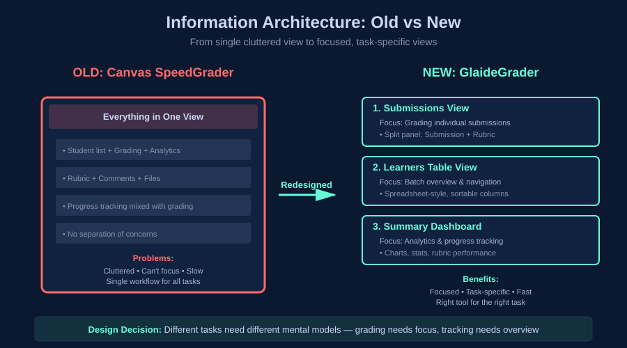
The interface in practice — submission preview and rubric side by side, with QC status always visible in the top bar:
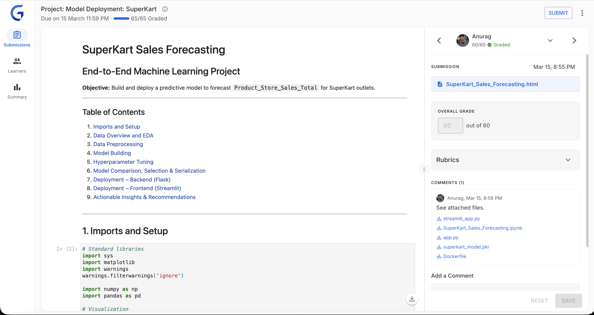
1. Submissions View
Focused grading mode — submission preview and rubric side by side. Designed for heads-down evaluation without context switching.
2. Learners Table
Batch overview and navigation. Lets evaluators scan cohort status, filter by state, and jump to specific students efficiently.
3. Summary Dashboard
Analytics and progress tracking for program managers. Real-time metrics on grading throughput, score distributions, and rubric performance.
Why three views? Different tasks need different mental models. Grading needs focus. Tracking needs overview. Forcing them together created the original problem.
Phase 2: Prototyping & Validation
Built interactive React prototypes to test with real evaluators — not static mockups. This let us observe actual grading behavior, not just stated preferences.
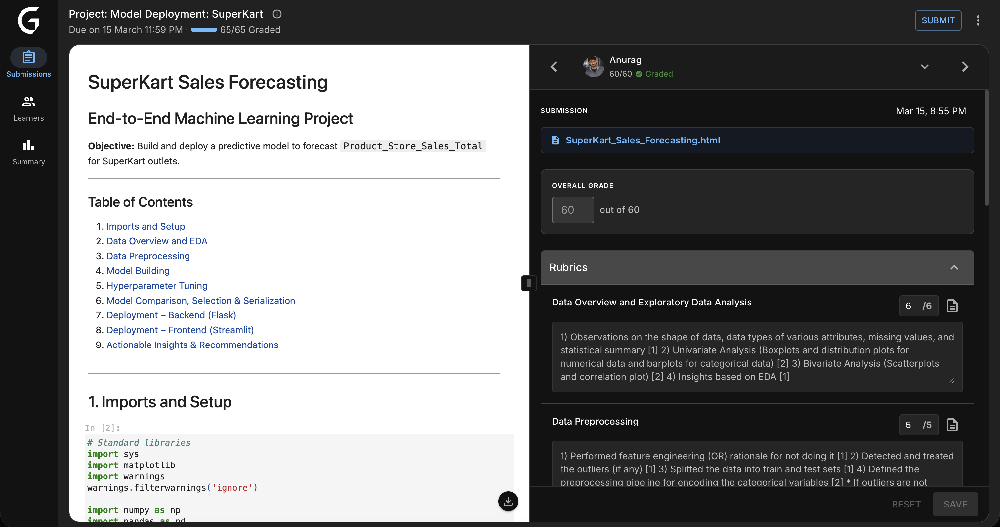
Key Design Decision: Resizable Panels
Testing revealed evaluators have deeply different preferences. Visual learners wanted a large submission preview. Experienced graders wanted to maximize rubric space. One fixed layout served neither.
Solution: Draggable dividers with persistent width preference — your workspace, your way.
Phase 3: AI Features Design
AI Quality Check required the most design iteration. The challenge: make it genuinely useful without adding cognitive overhead or making evaluators feel surveilled.
❌ Attempt 1: Modal popup after save
Blocked the workflow mid-session. Evaluators found it intrusive and started ignoring it entirely.
❌ Attempt 2: Silent background errors
No friction during grading, but surprises at submit time created anxiety and eroded trust in the tool.
✅ Final: TopNav traffic-light indicator
Non-blocking, always visible, glanceable. Evaluators check it on their own terms. Result: 94% find AI QC helpful, not annoying.
Key Features & Design Decisions
1. Split-Panel Grading Interface
Design: Resizable panels with draggable dividers. Submission preview on the left, rubric on the right — everything needed for a grading decision in one view.
Impact: 85% of evaluators customized their layout within the first session.
Why it works
Eliminates the single biggest time waster: switching between tabs to cross-reference submission content against rubric criteria. The answer and the question are always visible together.
2. Keyboard-First Workflow
| Shortcut | Action | Adoption |
|---|---|---|
| j / k | Next / Previous student | 92% |
| g | Focus grade input | 78% |
| s | Save grades | 88% |
| ? | Open shortcut help | 61% |
Impact: Power users grade 40% faster with keyboard shortcuts.
3. AI Quality Check (Non-Intrusive)

Design: Traffic-light system in TopNav — always visible, never blocking. Evaluators consult it on their own schedule.
Impact: 60% reduction in grading inconsistencies. 94% of evaluators regularly use and trust QC feedback.
Building Trust with AI
Evaluators were initially skeptical. Key principle: AI is advisory, not authoritative. QC surfaces potential issues — the evaluator always has final say. This framing drove adoption.
4. In-App Plagiarism Detection
Design: Embedded plagiarism report with color-coded severity — no tab switching, no screenshot-and-cross-reference workflow. Everything in context.
Impact: 78% faster plagiarism review.
5. Mobile-Responsive Grading
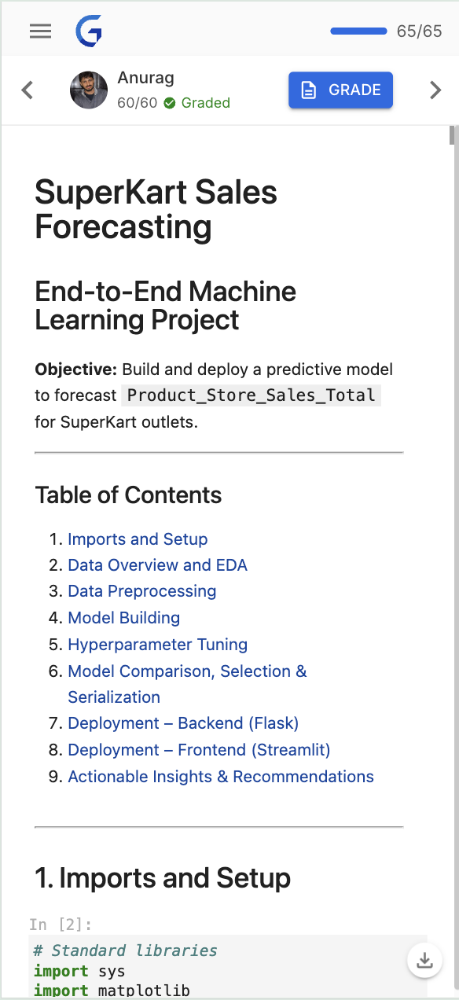
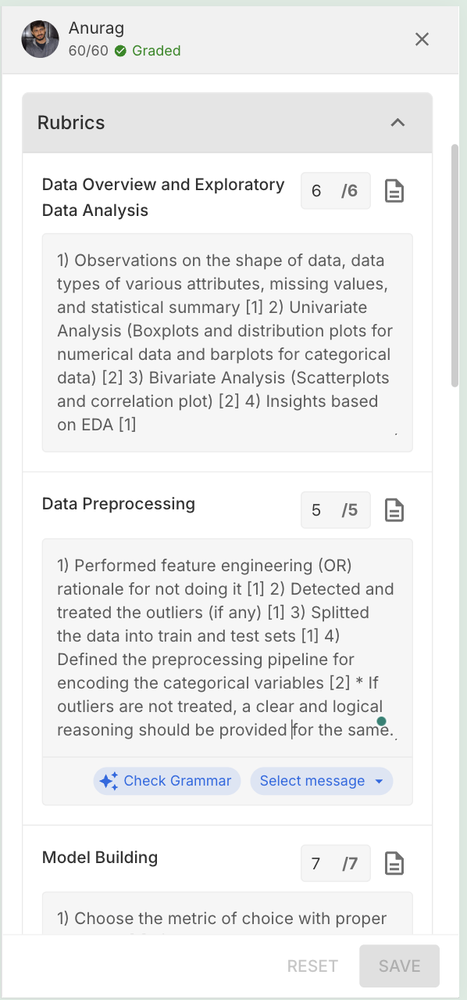
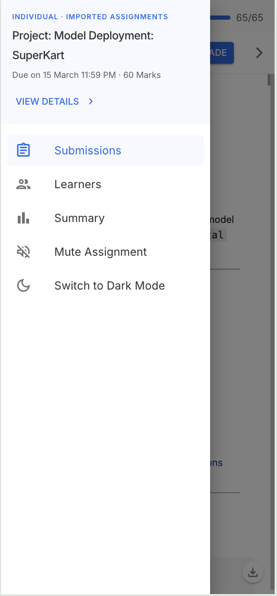
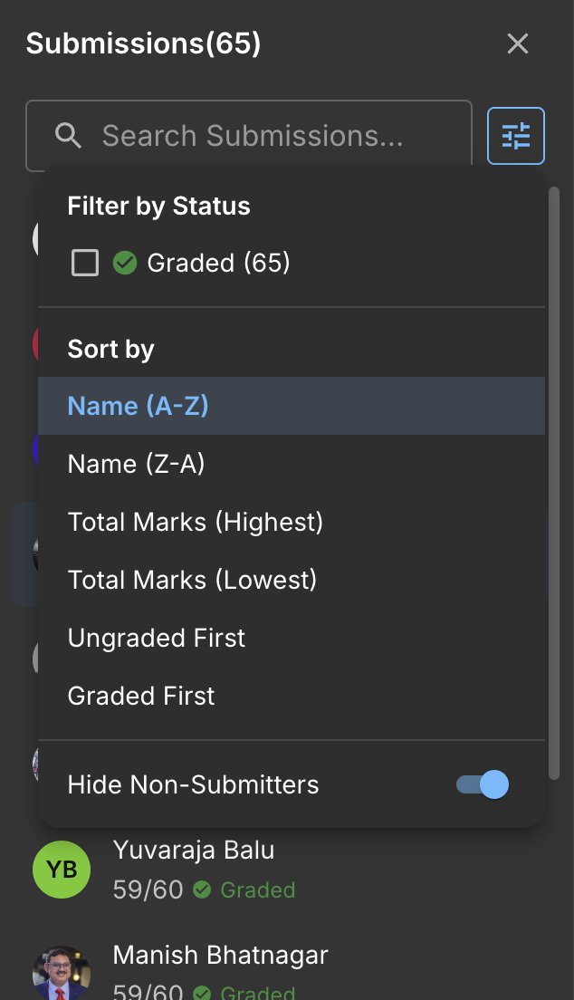
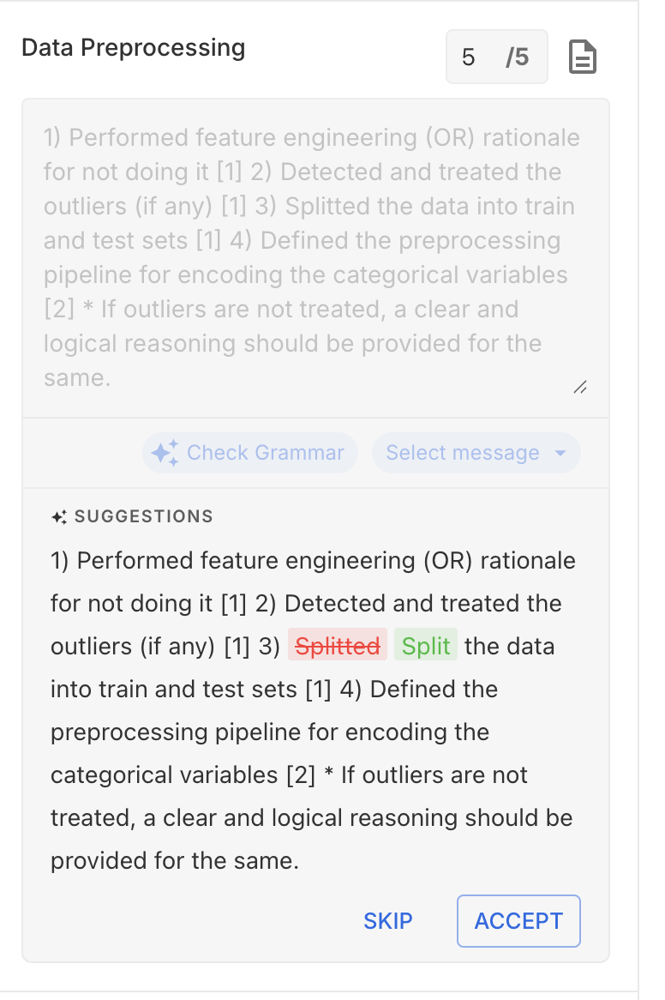
Design: Bottom sheets, swipe navigation, thumb-friendly touch targets — designed mobile-first, then scaled up to desktop rather than bolted on afterward.
Impact: 25% of all grading now happens on mobile. 5,000+ submissions graded on mobile in the first month.
6. Analytics Dashboard
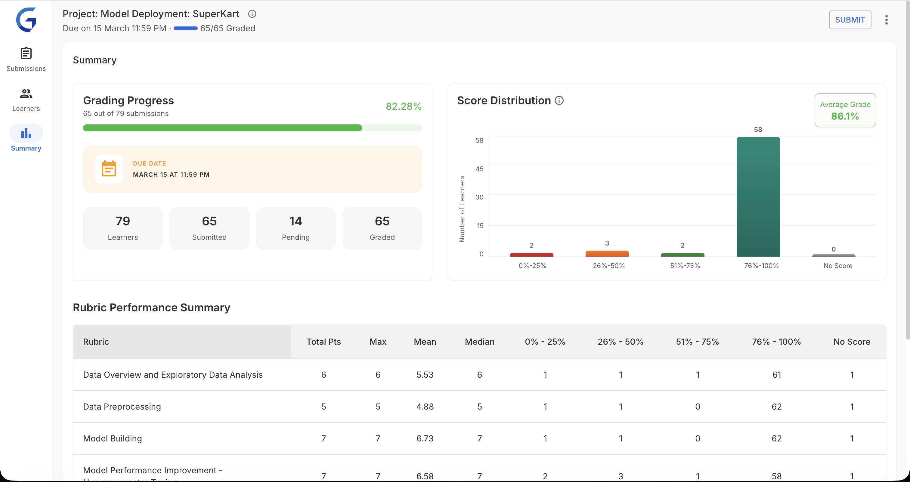
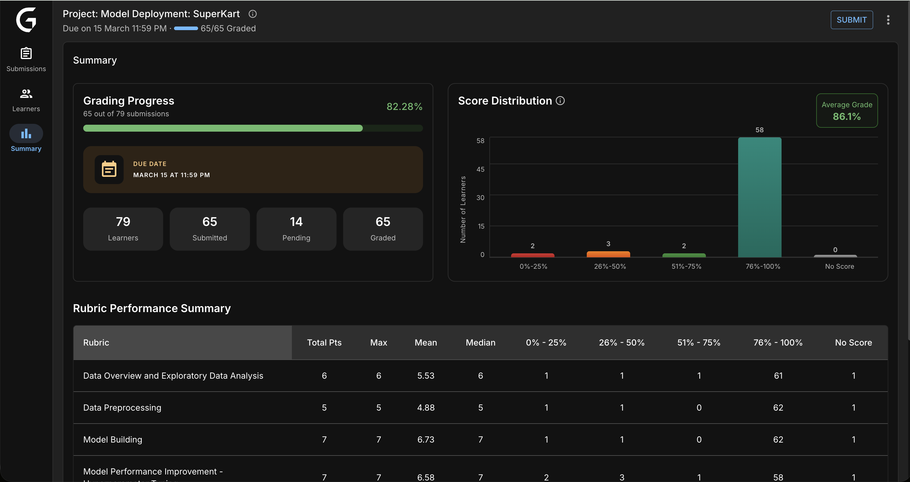
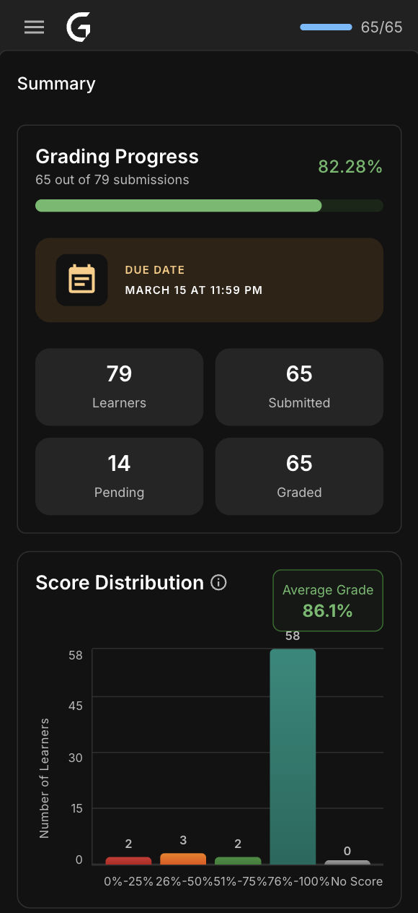
Design: Real-time metrics for program managers — score distributions, rubric performance, grading throughput. Designed to answer "where are the bottlenecks?" in seconds.
Impact: 100% PM adoption. 40% faster bottleneck identification.
Impact & Results
Measured 3 months post-launch across 200+ active evaluators.
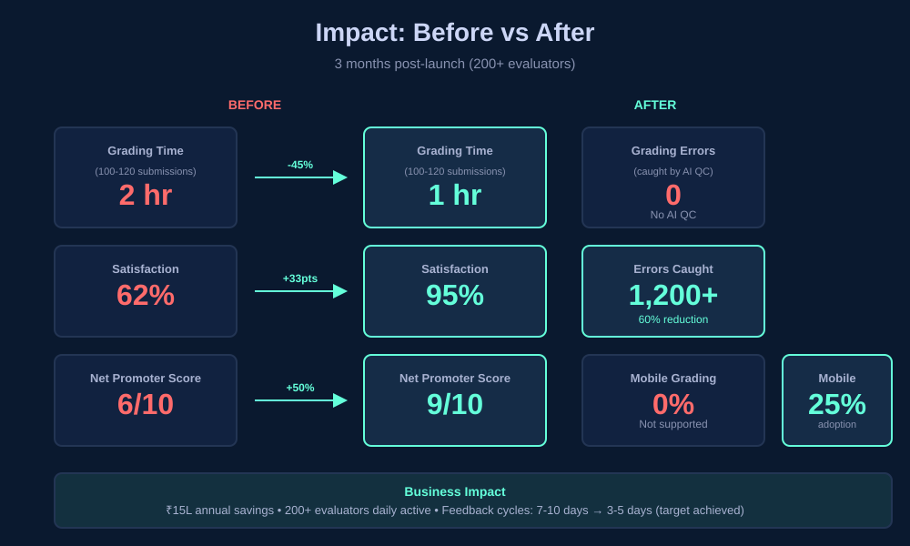
Grading Efficiency
45% faster grading — 2 hours → 1 hour for 100–120 submissions
60% fewer errors — AI QC caught 1,200+ inconsistencies
Zero data loss — autosave eliminated all grade loss incidents
Evaluator Satisfaction
95% satisfaction — up from 62% (+33 percentage points)
9/10 NPS — up from 6/10
200+ evaluators actively using the platform
Adoption
25% mobile adoption — 5,000+ submissions graded on mobile
78% using keyboard shortcuts — power users grade 40% faster
94% AI QC usage — evaluators regularly check QC feedback
Business Impact
₹15L annual savings — 45% efficiency gain across 200+ evaluators
100% PM adoption — all program managers use analytics dashboard
Feedback cycles: 7–10 days → 3–5 days — target achieved
"This is the first tool designed FOR evaluators. Keyboard shortcuts alone save me hours every week."
— Senior Evaluator, Data Science
"I can grade during my commute now. Mobile grading is a game-changer."
— Evaluator, Software Engineering
"AI QC catches mistakes I didn't realize I was making. Made me a better evaluator."
— Lead Evaluator, Business Analytics
Future Roadmap
Phase 2: AI Auto-Grader (In Planning — Q2–Q3 2026)
Goal: further reduce org costs by 30–40% by shifting routine grading to AI, freeing evaluators to focus on edge cases and qualitative judgment.
Planned Features
- AI-suggested grades based on rubric criteria
- Auto-comment generation from submission analysis
- Smart rubric pre-fill for common patterns
- Human-in-the-loop validation workflow
Expected Impact
- Grading time: 1 hour → 40 min for 100–120 submissions
- Additional ₹10–12L annual savings
- Evaluators focus on edge cases, not routine grading
Key Learnings
1. Design for Power Users AND Beginners
Challenge: Balance deep customization with out-of-the-box simplicity.
Solution: Progressive disclosure — simple defaults with advanced features discoverable when needed. New evaluators aren't overwhelmed; experts aren't constrained.
2. Build Trust with AI
Challenge: Evaluators were skeptical of AI — "Will it replace me?"
Solution: Position AI as assistant, not replacement. QC is advisory. Evaluators stay in control. Transparency + user control = adoption.
3. Mobile-First Thinking
Challenge: Desktop-first design felt bolted on for mobile — it was clunky and unused.
Solution: Designed the mobile experience first, then scaled up. Mobile constraints forced clarity and prioritization that improved the desktop experience too.
Reflection
GlaideGrader taught me that the best solutions come from deeply understanding workflows, not just surface pain points.
Shadowing evaluators revealed that 70% of their time was wasted on non-grading tasks. Fixing that structural problem — not just adding features — created the 45% efficiency gains. Features without workflow understanding are just noise.
Personal Growth
- Designing AI features that build trust rather than fear
- Mobile-first thinking for complex, data-heavy workflows
- Prototyping with code for faster, more realistic validation
- Balancing stakeholder needs with evaluator needs under tight timelines
All metrics from internal Great Learning data (Q1 2026). 200+ evaluators, 95% satisfaction, 9/10 NPS. Screenshots reflect actual shipped product.